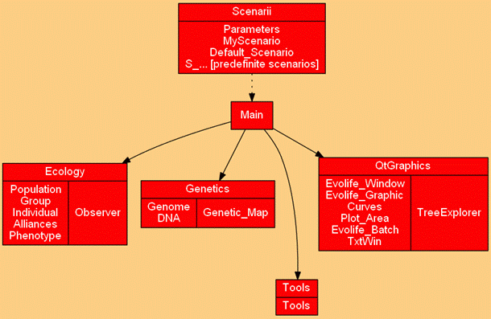

| Alliances.py: | Defines social links between individuals. Useful for certain scenarios. |
| Curves.py: | Stores points to be displayed on curves |
| Default_Scenario.py: | Implements a default scenario from which actual scenarios are derived. |
| DNA.py: | Where the hereditary binary string is defined, and crossover and mutation are implemented. |
| Evolife_Batch.py: | A silent (no graphic) version of Evolife for batch mode. |
| Evolife_Graphic.py: | A few displays specific to Evolife. |
| Evolife_Main.py: | Evolife main file. |
| Evolife_Window.py: | Window system for Evolife. The 2012 version and later are based on QT (previous versions used Tk). |
| Genetic_map.py: | Defines the location of genes on the DNA string. |
| Genome.py: | Defines the genome of individuals as a set of genes. |
| Group.py: | Defines groups, where reproduction and interactions take place. |
| Individual.py: | Defines the individual’s properties, which bring together a genome, a phenome and social relations. |
| MyScenario.py: | This file is used to instantiate the scenario and make it accessible to all other modules. |
| Observer.py: | Stores simulation results and performs statistics. |
| Parameters.py: | Interface with configuration file Evolife.evo |
| Phenotype.py: | Defines a set of non-inheritable characteristics called ‘phenes’. |
| Plot_Area.py: | Defines a zone to display graphics. Can be used independently from Evolife. |
| Population.py: | Defines the whole population as a set of groups. |
| S_*.py: | Specific scenarios. |
| Simulation_Thread.py: | Interface with Evolife’s window system. |
| Tools.py: | A few useful functions. |
| TxtWin.py: | Defines a zone to display texts. Can be used independently from Evolife. |
| Void_Scenario.py: | A scenario that can be customized. Its execution launches Evolife’s window system directly, thus bypassing Evolife_Main.py. |
| labyr.gif: | Image of the labyrinth (used in one basic scenario). |
| *.csv: | Files created by Evolife. They contain evolution curve coordinates (as they are displayed). These files can be opened with MS-Excel. |
| *.res: | Files created by Evolife. They contain coordinates for each curve, averaged over time. Such files may be concatenated to average over several experiments (useful in batch mode). |
| EvoStart.gen: | This file contains (in text format) the genome of an entire population to start from (if that option is chosen). |
| Readme.html: | Evolife documentation. |
| Readme.txt: | A text version of this file. |
| Evolife.html: | Homepage for the Evolife package. |
| Antnet.py: | Ant system for message routing. |
| Ants.py: | Foraging ant colony. |
| CellularAutomaton.py: | Illustrates one-dimensional cellular automata. |
| Cocktail.py: | Illustrates the ‘cocktail party’ effect. |
| Morphogenesis.py: | Illustrates Turing’s morphogenesis theory. |
| PathFinder.py: | Illustrates path formation. |
| Segregationism.py: | Illustrates Thomas Schelling’s famous experiment. |
| SocialNetwork.py: | Emergence of optimal social signals. |
| Swallows.py: | Illustrates collective decision. |